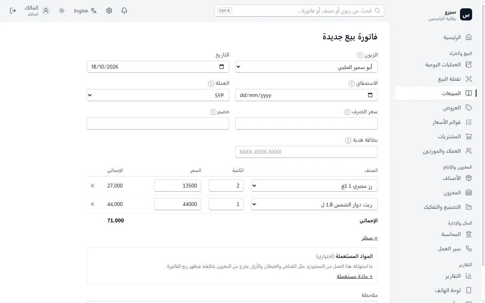
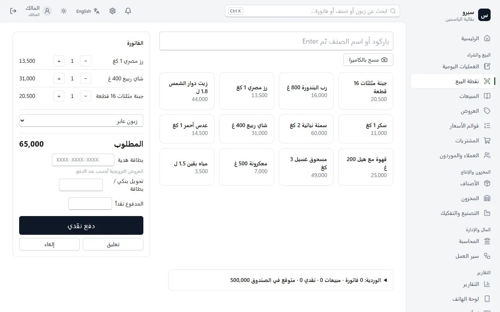
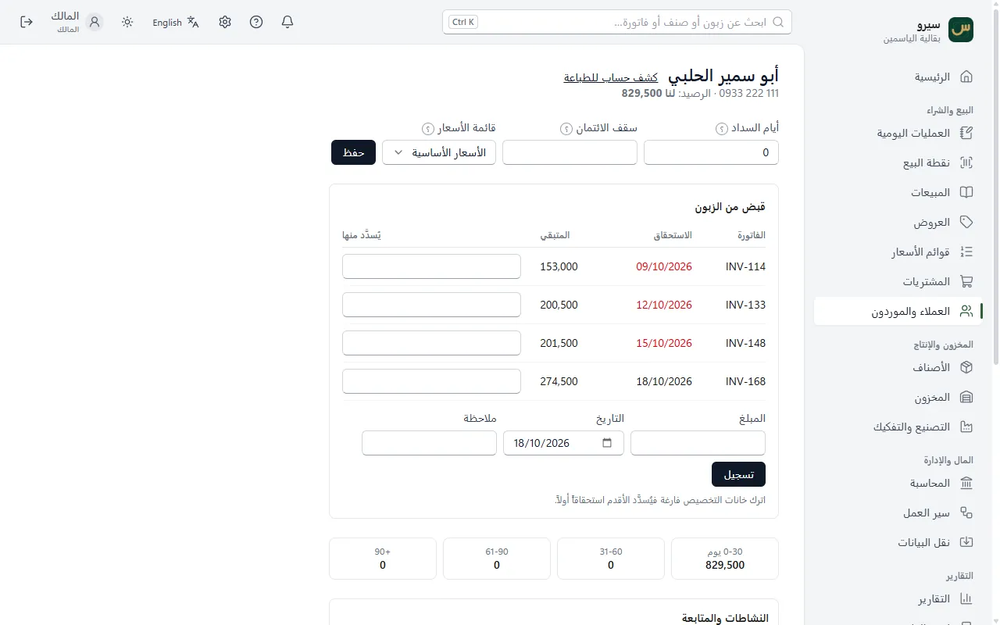

البيع اليومي
طريقتان للبيع: فاتورة لكل عملية، أو نقطة بيع سريعة بالباركود للكاشير. وكل بيع يُقيَّد في الحسابات وحده.
فاتورة بيع
- من المبيعات اختر فاتورة بيع جديدة، أو اضغط Ctrl + K واكتب «فاتورة بيع».
- الزبون: اترك نقدي لبيع مدفوع الآن، أو اختر زبوناً لتُسجَّل الفاتورة على حسابه.
- اختر الصنف واكتب الكمية؛ السعر يُملأ وحده ويمكن تعديله. + سطر لصنف آخر.
- اضغط حفظ. تُفتح الفاتورة وفيها طباعة.

نقطة البيع
- افتح نقطة البيع واكتب المبلغ الموجود في الدرج، ثم افتح الوردية.
- امسح الباركود، أو اكتب اسم الصنف ثم Enter، أو اضغط على بطاقة الصنف.
- اكتب المبلغ المدفوع واضغط دفع نقدي. لتحويل أو بطاقة اكتب المبلغ في خانته.
- آخر اليوم: اكتب النقد المعدود فعلياً واضغط إغلاق الوردية. يظهر الفرق إن وُجد.

مرتجع
- افتح الفاتورة الأصلية (من المبيعات أو بالبحث برقمها).
- في قسم مرتجع اكتب الكمية الراجعة لكل صنف، أو إرجاع كل المتبقي.
- اضغط تسجيل المرتجع. البضاعة تعود للمخزون، والمبلغ يُرد للزبون أو يُخصم من حسابه.
قبض من زبون
- افتح العملاء والموردون واضغط اسم الزبون.
- في قبض من الزبون اكتب المبلغ واضغط تسجيل. يُسدَّد الأقدم أولاً، أو حدّد الفواتير بنفسك.

بلا دفتر فواتير؟ العمليات اليومية ← بعت أو قبضت من زبون: مبلغ وزبون فقط، والبرنامج يقيّد الباقي.